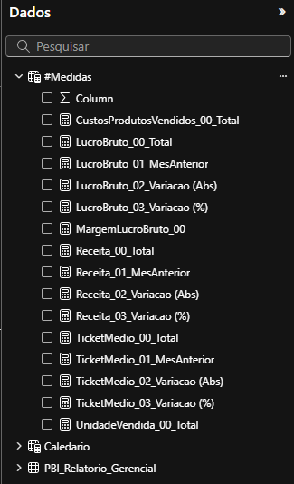

Processo ETL
Arquivo CSV tratado no Databricks
- O dataset é uma amostra de dados do Power BI nomeada como "financials".
- Como os valores do dataset estavam em inglês, utilizei o laço "for" para realizar a tradução das colunas, seguido da função "withColumnRenamed".
- Utilizei também o laço "for" para traduzir o conteúdo das colunas, juntamente com a função "regexp_replace".
- Fiz a conversão dos valores que estavam como "string" para o formato "decimal". Um ponto importante é que no arquivo csv os valores decimais estavam como "vírgula" e foi necessário substituí-los como "ponto" para realizar a converção utilizando a função "cast".
- A última tratativa desse arquivo vou realizar a conversão da data que estava no formato "string" para o formato "date" utilizando a função "to_date".

Desenvolvimento Power BI
Dataviz
- A ideia é apresentar um dashboard que apresente dados macros relevantas para a tomada de decisão, com base na dimensão de dados financeiros.
- As cores foram escolhidas com uma maior proporção branca, com tonalidades laranja e azul para que haja um conforto visual.
- Quando apontamos o mouse em algum dos marcadores do gráfico de linhas, aparece o quadro de "dicas de ferramentas" com as informação referente a "variação m/m-1".

Métricas, Indicadores e KPI's
Porque eles foram escolhidos para esta análise
- Receita Por Mês: o objetivo desta visualização é facilitar a identificação da evolução da Receita no decorrer dos meses, podendo assim passar o mouse sobre os marcadores e obter uma visão a variação do mês anterior das variáveis "var Receita m/m-1", "var Lucro m/m-1" e var Ticket Médio m/m-1".
- Receita Por País: Trazer o percentual e o valor absoluto da participação de cada País sob o valor total da Receita.
- Receita Por Produto: Trazer o percentual e o valor absoluto da participação de cada Produto sob o valor total da Receita.
- Comparativo Mensal: A ideia dessa tabela é trazer um comparativo mês a mês da evolução das vendas no decorrer do tempo. Esse comparativo possibiliza analisar a variação mês a mês, e no caso de gaps constantes, acionar as áreas responsáveis para realizar uma análise mais detalhada sobre os detratores dos resultados financeiros.
